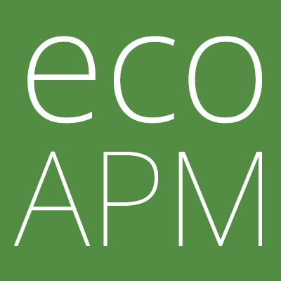

Performance Is Accessibility
Steve Desmond
Ithaca Web People
August 3, 2020
Do I like talking about performance?
What does accessibility mean to you?
Accounting for our differences
to help a more diverse community
accomplish their goals
Accessibility Considerations
- Physical abilities
- Sight
- Motor skills
Xbox Adaptive Controller


Accessibility Considerations
- Physical abilities
- Sight
- Motor skills
- Cognitive differences
Response Times
The 3 Important Limits
Nielsen Norman Group
-
0.1 seconds
"instantaneous"
(no special feedback necessary) -
1.0 seconds
"uninterrupted flow of thought"
(lost feeling of operating directly on data) -
10 seconds
"limit for keeping user's attention"
(users will want to perform other tasks while waiting)
Response Times
The 3 Important Limits
Nielsen Norman Group
Neurotypical?
ADD / ADHD?https://thenextweb.com/podium/2020/04/06/designing-for-cognitive-accessibility-where-to-begin/
Accessibility Considerations
- Physical abilities
- Sight
- Motor skills
- Cognitive differences
- Economic disparities
Phone CPU performance by tier
https://twitter.com/slightlylate/status/1233275220275818498Accessibility Considerations
- Physical abilities
- Sight
- Motor skills
- Cognitive differences
- Economic disparities
- ...
- ?

Open Source
Application Performance Management
For The Planet
ecoAPM.com
Steve @ ecoAPM .com
Application Performance Management
For The Planet
ecoAPM.com
Steve @ ecoAPM .com